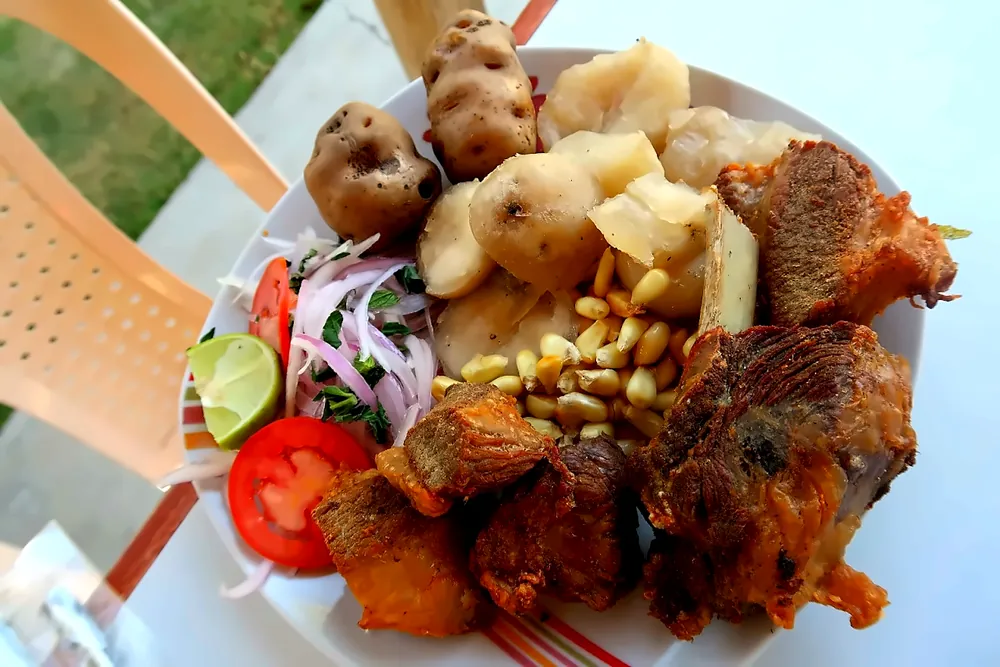
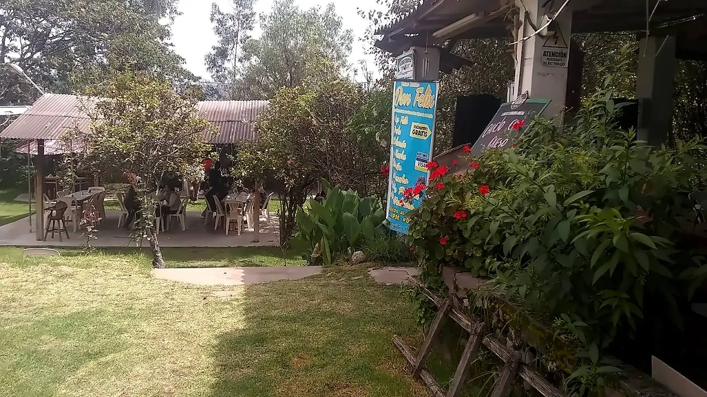
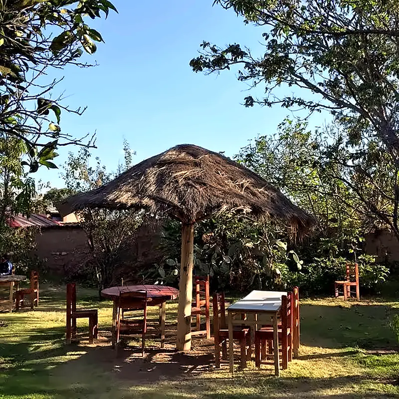
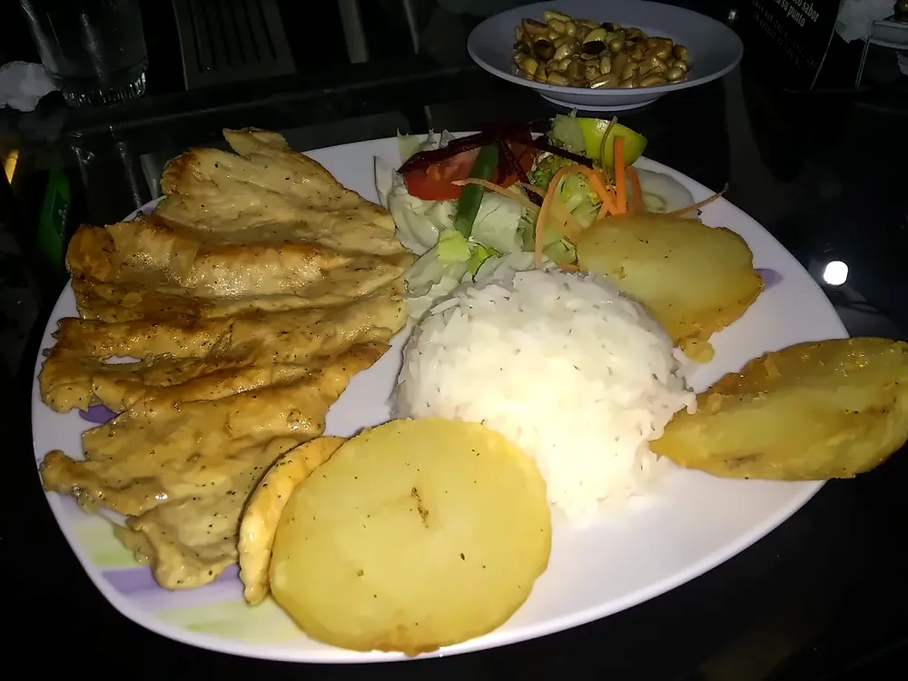
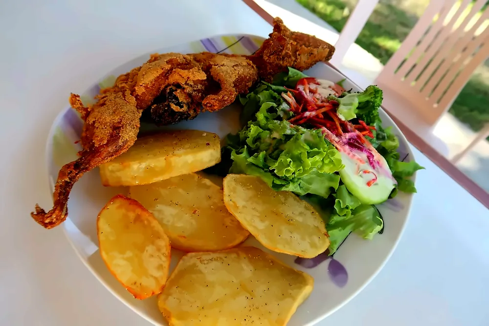
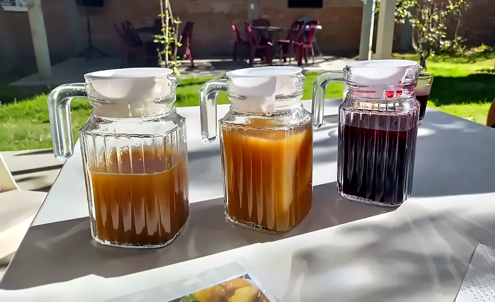
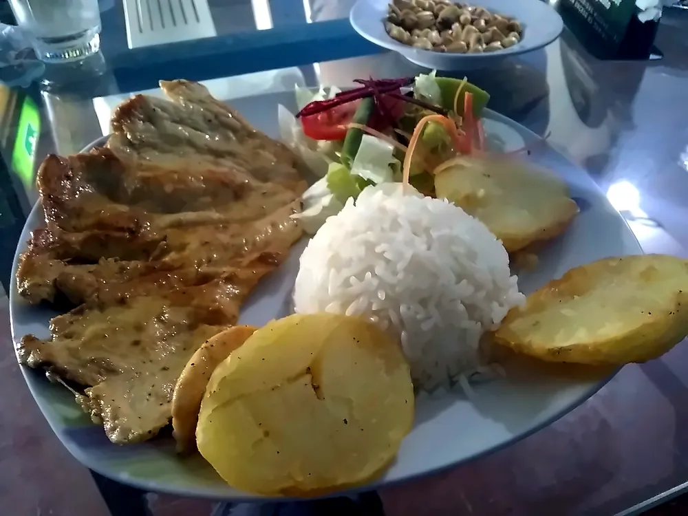
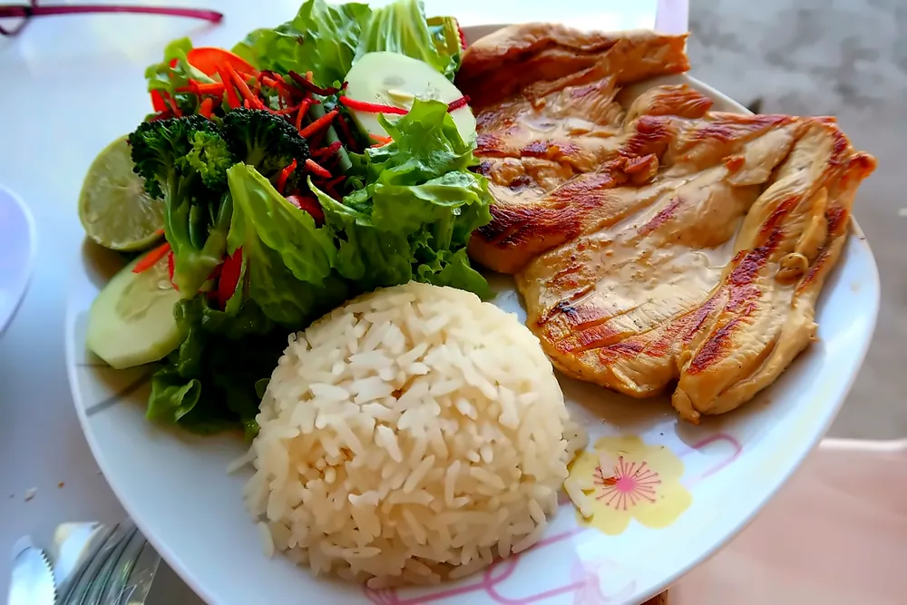
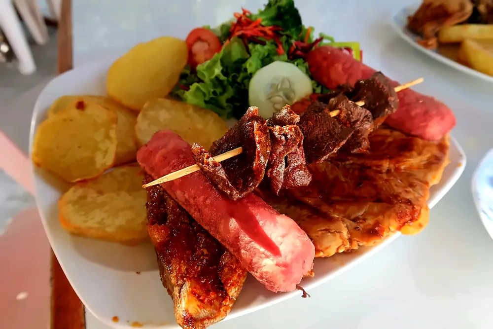
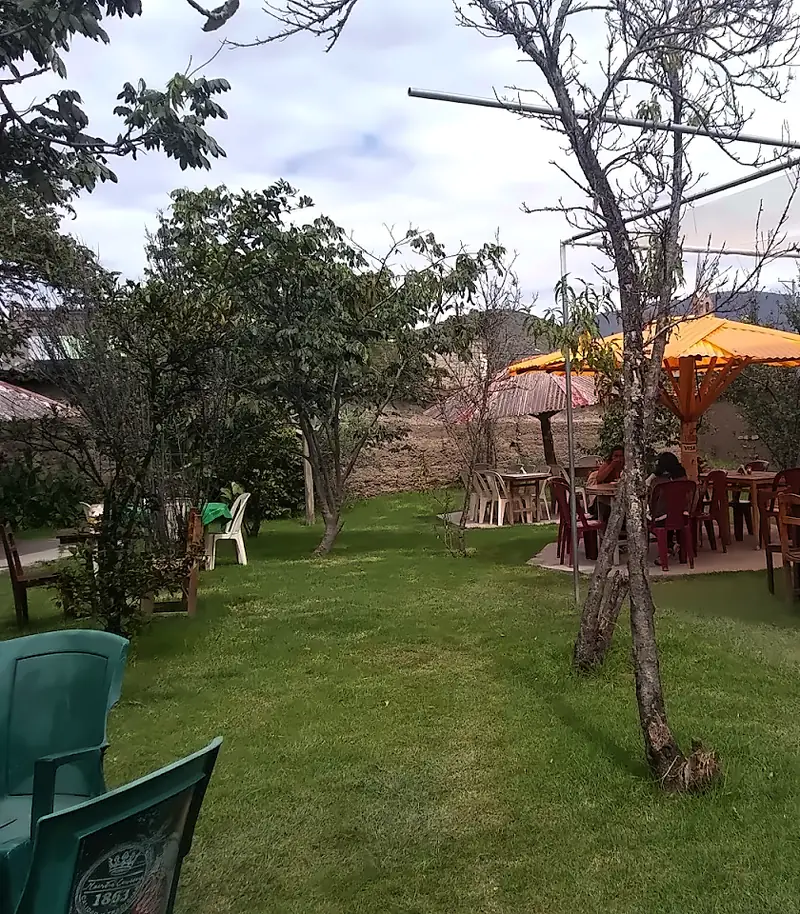

Chicharrón de cerdo

Cuy frito, chicharrón de cerdo, trucha y chichas tradicionales en un jardín con palapas, a pocas cuadras de la Plaza de Armas de Huanta.
Jr. José Félix Iguaín 386, Huanta · Amplia cochera
Somos un restaurante turístico en la provincia de Huanta y te ofrecemos los platos típicos de la región Huanta – Ayacucho.
Nuestro local es un recreo campestre dentro de la ciudad, a pocas cuadras de la Plaza de Armas: un jardín amplio con árboles, palapas de paja, mesas al aire libre y zonas techadas, para disfrutar en familia o con amigos.
Estamos en Huanta, conocida como "La Esmeralda de los Andes" por el verdor de su valle.

Estos son los platos de nuestra carta. Para consultar precios y disponibilidad del día, llámanos al 966 194 201.

Chicharrón de cerdo

Chicharrón de trucha

Cuy frito

Chichas de 7 semillas y de jora



Tomar bebidas alcohólicas en exceso es dañino.
La disponibilidad de los platos puede variar. Consulta por teléfono.
Disfruta tus platos en nuestro jardín, bajo las palapas, en las mesas al aire libre o en las zonas techadas.
Llamar al 966 194 201Consulta por teléfono cómo pedir tus platos para llevar.
Llamar al 966 194 201¿Vienes en grupo o con la familia? Llámanos para coordinar tu visita.
Llamar al 966 194 201Consúltanos por teléfono la disponibilidad del recreo para reuniones familiares y celebraciones.
Llamar al 966 194 201
Un espacio campestre en plena ciudad, con amplia cochera para tu vehículo.
Cómo llegar (se abre en una pestaña nueva)En el jardín también te pueden recibir algunos animalitos de granja.
«Me sorprendió su chicharrón de trucha. Creo que fue uno de los mejores platos que he comido en Ayacucho y parte de Junín.»
«Muy agradable restaurant campestre en Huanta. Excelente atención, platos abundantes, baños limpios.»
«…pudimos degustar 3 tipos de chicha: morada, de jora y de 7 semillas, esta última nos gustó mucho.»
«Fui en Semana Santa, fue muy agradable y muy buena atención.»
A pocas cuadras de la Plaza de Armas de Huanta.
Amplia cochera para tu vehículo.
Si visitas Huanta, conocida como la Esmeralda de los Andes por el verdor de su valle, haz una pausa para almorzar en nuestro recreo campestre.
Consulta nuestro horario de atención por teléfono.